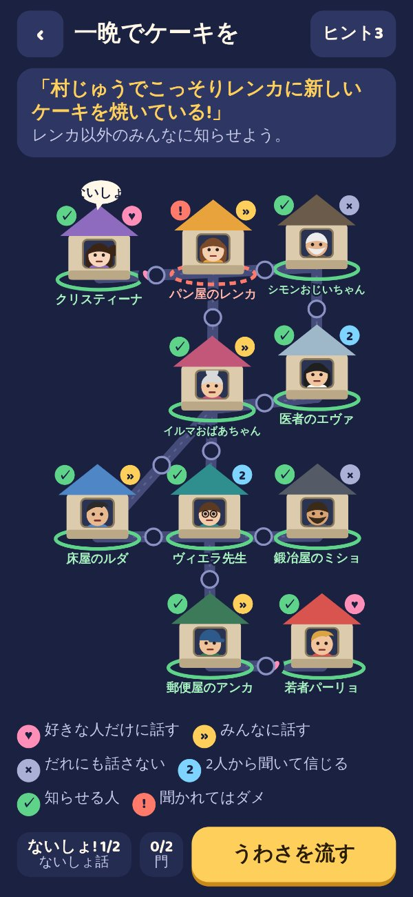
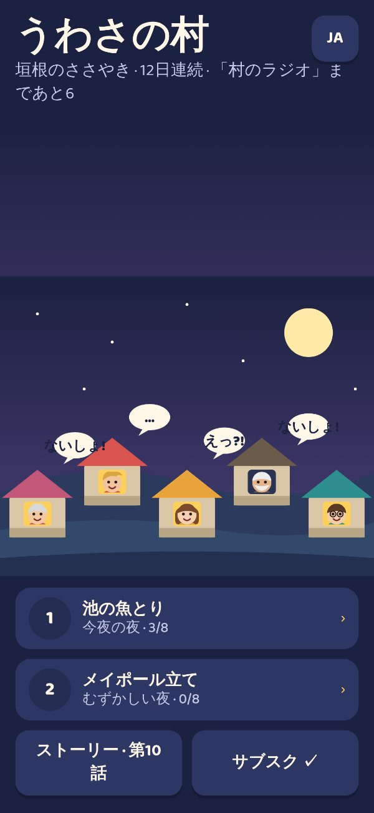
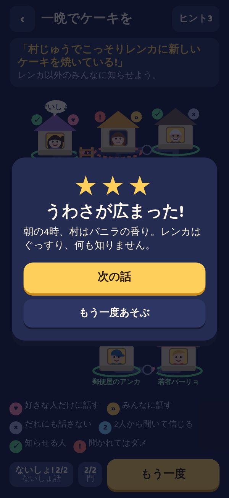

だれに知らせる?だれには絶対に内緒?
帰り道にぴったりの、ほっこりパズルゲーム。ご近所さん1人にないしょ話をすると、うわさはひそひそ村の小道を伝わっていきます。おばあちゃんはみんなに話し、おじいちゃんはだれにも話さず、村長は2回聞くまで信じません。
Google Play と App Store で近日公開
遊び方
- 今日のうわさと、知らせる人・内緒にする人を確認。
- ご近所さんをタップして、ないしょ話。
- 庭の門を閉めて、まちがった家に届かないように。
- うわさを流して、伝わる様子を見守ろう。ご近所さんにはそれぞれクセがあります。


毎日2つの新しい夜
1晩に8つのうわさ、少しずつむずかしく。約20分、帰りの電車やバスにぴったり。
連続ドラマの物語
消えたケーキ、ひみつのプロポーズ、毛皮のコートの男。2つのシーズンをお楽しみに。
片手で、音なしでOK
大きくて見やすい絵。立ったままでも遊べて、いつでも中断できます。
オフラインで遊べる
アカウントもインターネットも不要。新しい夜は毎日自動で届きます。
料金
ダウンロード無料。毎日1つ目の夜とストーリー最初の3話は無料で、うわさの合間に短い広告が入ります。「うわさの村 Plus」でストーリー全話、毎日2つ目のむずかしい夜、広告なし:7日間無料、その後は月額4.99ユーロまたは年額39.99ユーロ(各ストアの現地価格)。追加ヒント:5回 0.99ユーロ。ストアの設定からいつでも解約できます。
ヘルプとお問い合わせ
うわさで行きづまったり、村のアイデアがあったら、お気軽にメールください。すべてのメールにお返事します。
parentshelpmy@gmail.com